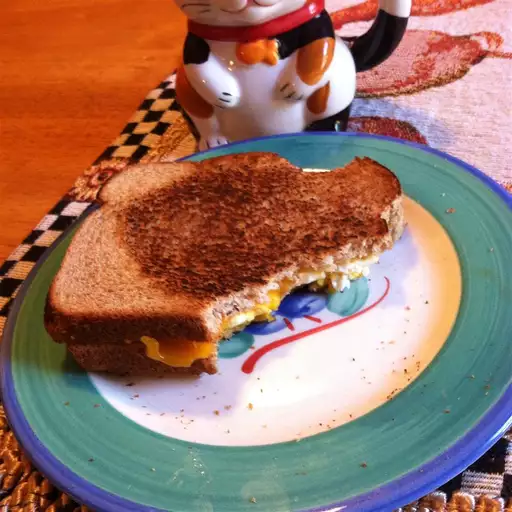

Campfire Breakfast Sandwich

Description
Make an egg breakfast sandwich over the campfire with your
Hobo/Sandwich/Mountain Pie toaster.
Ingredients
- 2 tablespoons butter
- 2 slices bread
- 1 egg
- 1 slice Cheddar Cheese
Directions
- Place a Hobo Pie toaster in the hot coals of a campfire to preheat for a
few minutes.
- Butter both slices of bread, then place one slice, butter-side down
into the toaster. Crack the egg onto the bread, and break the yolk.
Top with a slice of cheese and the second slice of bread, butter-side
up.
- Close the toaster, and place into the coals of the fire. Cook for several
minutes, turning frequently, until the bread has browned nicely on both sides.
- Eat the damn food